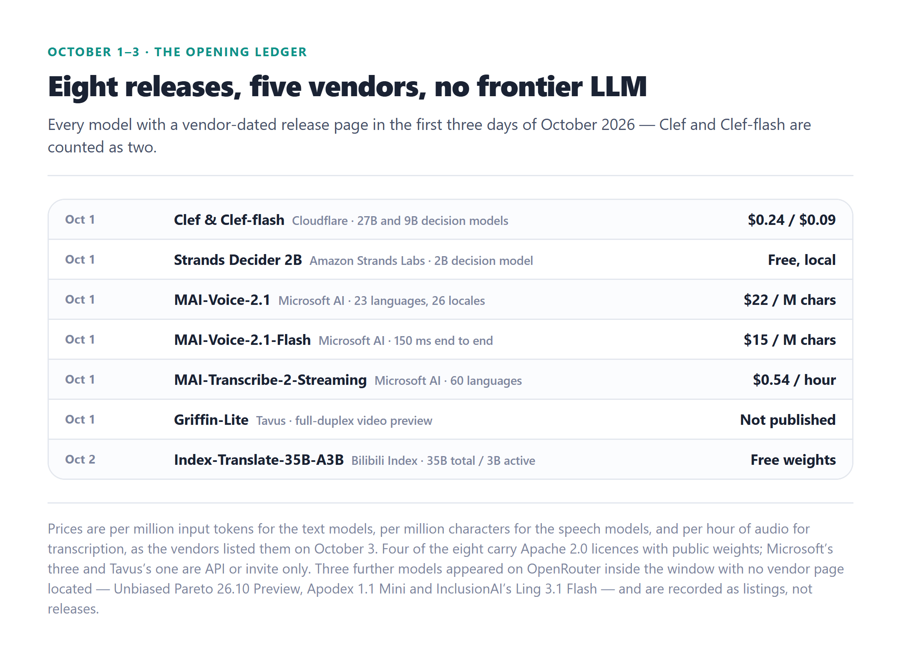
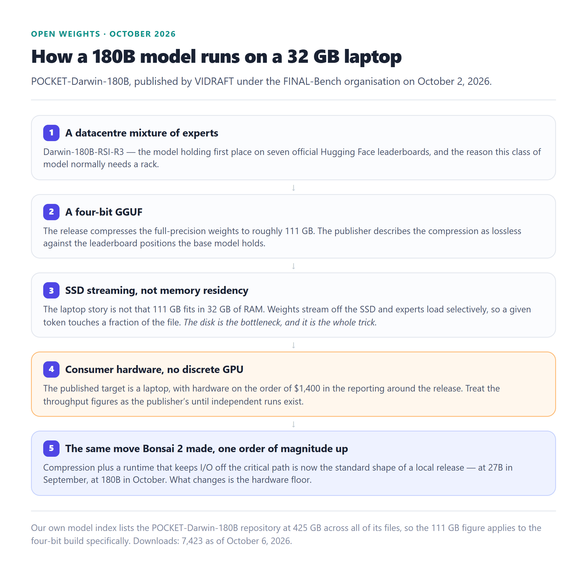
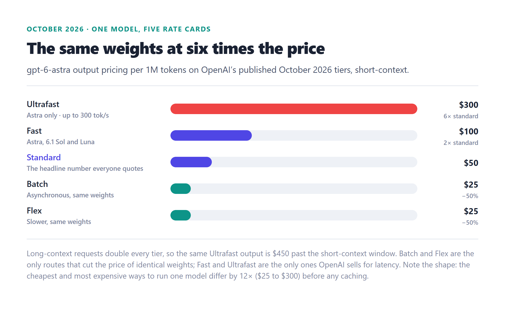

October 2026 AI Model Updates: Every Launch, Access Change, and Price Move
TL;DR — October opened with no frontier launch at all. The first three days produced eight models from five vendors and every one of them is a specialist: decision models from Cloudflare and Amazon, a voice and transcription stack from Microsoft, a full-duplex video preview from Tavus, and an open-weight translator from Bilibili's Index team. The frontier news was an access change and an absence. Google's Gemini 4 Argon — announced September 30 — has a published price and is reaching only vetted cyber defenders through the Fairwind Program, with no general availability date. OpenAI shipped no GPT-6.1 Astra; the Wall Street Journal reported the release was cancelled after internal safety tests. What did ship at the frontier came in the last three days of September: Claude Sonnet 5.5 (September 28) put 56.0 on the Artificial Analysis Intelligence Index at Sonnet's $2/$10, and DevDay's GPT-6.1 Sol (September 29) put 51.8 there for $0.72 a task — the cheapest run in the top tier. Cost per completed task, not cost per token, is now the number that decides routing.
🚀 Key Takeaway
October 2026 is the first month this year where the frontier's biggest story is a boundary rather than a model. Argon is real, scores level with GPT-6 Astra, and cannot be bought. GPT-6.1 Astra does not exist on any published calendar. Meanwhile the October 1 specialist wave is the more useful signal: two infrastructure companies shipped open-weight decision models on the same day, and a model that answers a typed question with a probability in tens of milliseconds is precisely the thing that lets you stop sending trivial calls to a frontier API.
This dispatch consolidates the September 27 – October 6 window: the run-up the September dispatch's September 26 dateline missed, DevDay and the cancelled release, the gated flagship, the eight-model opening ledger, the decision-model category it created, the open-weight and local releases — including a 180-billion-parameter model published as a laptop-sized GGUF — and the shift from price per token to cost per completed task as the metric teams actually route on. All figures come from primary announcements, vendor pages and independent trackers, and every model is attributed to the page its date was read from. Coverage window: September 27 – October 6, 2026; last verified October 6, 2026.
At a Glance
Contents
- The week the frontier went quiet: a timeline
- Anthropic: Claude Sonnet 5.5 and the effort-economics trap
- OpenAI DevDay: GPT-6.1 Sol, Ultrafast and dots
- The cancellation: GPT-6.1 Astra and a safety-driven calendar
- Google: Gemini 4 Argon and the gated frontier
- October 1: the specialist wave
- Decision models: a new slot with probabilities instead of text
- The rest of the ledger: translation, listings, stragglers — and who shipped nothing
- Open weights: a 180B model on a laptop
- What people actually ran: our own GGUF ledger
- Price: the shift from tokens to completed tasks
- Leaderboard snapshot
- Trend: cyber capability spreads into open weights
- What it means + what to watch
- FAQ
- Sources
01 — The week the frontier went quiet: a timeline
September's dispatch closed with a dateline of September 26, which means the three most consequential frontier releases of the current cycle — Claude Sonnet 5.5, GPT-6.1 Sol and Gemini 4 Argon — all landed in the four days after it went to press. October then opened without a single frontier model: the first three days produced eight vendor-dated releases and not one of them is a general-purpose frontier LLM. That inversion is the shape of this month.
The pattern worth noticing is that capability and availability have come apart. In September the frontier story was density — four launches in 72 hours, twenty-plus releases in two weeks. In October the frontier story is a permission boundary (a model that beats everything measured and is reserved for vetted cyber defenders) and a cancellation (a model announced, evaluated, and pulled). Everything actually shipped and generally available in the window is either a specialist or an open weight.
The quiet Sunday
No vendor-dated releases. The last two useful signals from the previous week were Anthropic's disclosures on September 25 and OpenAI's pre-DevDay positioning — both covered in the September dispatch, neither superseded by anything in October.
Claude Sonnet 5.5 released
Same $2/$10 as Sonnet 5, cache reads at $0.20, more than 30% faster and up to 30% cheaper per task. It scores 56.0 on the Artificial Analysis Intelligence Index — second in the world — and takes Terminal-Bench 4.0 at 63.6% against Opus 5.5's 59.6%. It is also the new model behind the free tier on claude.ai.
DevDay: GPT-6.1 Sol, Ultrafast, dots, Pro 500
OpenAI's developer event at Fort Mason. GPT-6.1 Sol reaches 51.8 on the index at $2/$10 with cached input halved to $0.10 — an index task costs $0.72, against $3.26 for Astra. Ultrafast mode is reported at up to 8× speed and 300 tokens/second for 6× the price. dots, an always-on personal agent product running on GPT-6 Astra, was the event's signature announcement.
Gemini 4 Argon announced — defenders only
Google's first Gemini 4 frontier model, rolling out to trusted cyber defenders through the Fairwind Program. It writes up to 1M output tokens in one response, up from 64K, and scores 52.6 on the index at high effort — level with GPT-6 Astra — with the lowest hallucination rate Artificial Analysis has measured. Introductory pricing is $2/$10, with cached input 95% off, against a standard $4/$20. No general availability date was given.
The specialist wave opens
Cloudflare ships Clef (27B) and Clef-flash (9B) decision models — Apache 2.0 weights, post-trained from Qwen bases, $0.24 and $0.09 per million input tokens on Workers AI. Amazon's Strands Labs ships Strands Decider 2B, free and local. Microsoft AI ships three speech models. Tavus previews Griffin-Lite to invited testers.
Translation, and a laptop 180B
Bilibili's Index team publishes Index-Translate-35B-A3B-preview — a 35B-total, 3B-active MoE with 150 text languages under Apache 2.0. VIDRAFT, publishing as FINAL-Bench, releases POCKET-Darwin-180B: a four-bit GGUF of the model that tops seven Hugging Face leaderboards, at roughly 111 GB.
The community quant layer
Abliterated and re-quantised Qwen3.8 Flash Next builds appear within 48 hours of the base weights being available — including an IQ-quant set that drew 291,404 downloads in four days, and a 480 KB numerical fix for the Strata format. Google publishes a 2.36 GB Gemma 4 E4b diarisation GGUF.
gpt-rosalind-research starts billing
The life-sciences model moves from free research preview to a priced endpoint: $5 per million input tokens, $0.50 cached, $25 output. Cache-write pricing does not apply, and access stays limited to approved research through OpenAI's trusted-access program — the same shape as Argon's Fairwind gate and the first time this month a model's price changed without a model being released.
Verification window
No further vendor-dated general releases. The October 1–3 ledger holds at eight models and five vendors; the corroboration-only listings on OpenRouter stay listings. Every figure in this dispatch was read on October 3 and re-verified on October 6.
Read the timeline this way: the nine most important days in this dispatch are September 28 to October 2. Two frontier models shipped in that stretch, one frontier model was announced but withheld, one was cancelled, and eight specialists arrived. Only the specialists were available to everyone.
02 — Anthropic: Claude Sonnet 5.5 and the effort-economics trap
Six days after shipping Opus 5.5, Anthropic released Claude Sonnet 5.5 on September 28 at the same $2/$10 per million tokens as Sonnet 5, with cache reads at $0.20. Anthropic's claims are speed and cost — more than 30% faster, up to 30% less per task — but the interesting finding is that the capability claim holds up independently. Artificial Analysis measures Sonnet 5.5 at 56.0 on Intelligence Index v4.3.2, second only to Opus 5.5 at 57.6, ahead of Claude Fable 5.1 at 53.4 and GPT-6 Astra at 52.7. Sonnet 5 sat at 38.2 by comparison.
On specific boards it beats its own flagship family. Terminal-Bench 4.0 comes in at 63.6% against Opus 5.5's 59.6%. LiveBench Coding lands at 91.4 against 89.3. AutomationBench-AA is 71.3% against 69.5%. GDPval-AA v2.1 puts it two Elo points behind Opus 5.5 — 1844 against 1846. Anthropic is now in the unusual position of selling a mid-tier model that wins benchmark rows its top-tier model loses, and at a fifth of the price.
The catch is effort, and it is a large enough catch to restructure a budget. At max effort the index run consumed 410 million output tokens and cost $7.60 per task — more than Opus 5.5's $5.98 and more than Sonnet 5's $5.09 for the same evaluation. At xhigh it scores 51.9 for $2.74 a task. At high it scores 46.7 for $1.08. The Claude apps default to Medium; the API defaults to High. That is a 7× cost swing inside a single model, and it is bigger than the gap between most pairs of models on the leaderboard.
Where it is genuinely weaker than Opus 5.5 is agentic coding and factual reliability: 56.3 on LiveBench Agentic Coding against Opus 5.5's 71.7, and 32.3 on the hallucination-penalised AA-Omniscience index against 46.4. Anthropic also routes higher-risk cybersecurity requests on Sonnet 5.5 back to Sonnet 5, which is now a legacy model — a fallback pattern worth knowing about if you operate in that space and expect the newer model to answer.
The distribution story may matter more than the benchmarks. Sonnet 5.5 is now what the free tier on claude.ai serves, while ChatGPT's free tier runs Luna 5.6. On measured intelligence those are not close, which makes Anthropic's free offering the more capable one for the first time in this cycle — and it means the cheapest way to try a 56.0-index model is now a free account. Anthropic says Haiku 5.5 arrives "in the coming weeks", which is the release to watch if you care about the sub-$1 tier, because that is exactly where GPT-6 Luna's $0.07-per-task economics currently have no Claude answer.
03 — OpenAI DevDay: GPT-6.1 Sol, Ultrafast and dots
OpenAI's DevDay ran on September 29, 2026 at Fort Mason in San Francisco, and the keynote's whole framing was the personal agent. dots is a new always-on agent product — DevDay's branding was built around it, and OpenAI says specialist dots for legal, finance and similar domains are planned. dots runs on GPT-6 Astra, which is worth noting: the most capable model OpenAI has shipped is now the engine of a consumer product rather than an API line item.
The model announcement was GPT-6.1 Sol, one week after GPT-6 Sol. It costs the same $2/$10 per million tokens with cached input halved to $0.10, and OpenAI's framing is that it "nearly matches GPT-6 Astra on agentic coding, computer use and professional work at a fifth of Astra's token prices". The independent numbers put it close rather than level: 51.8 on Intelligence Index v4.3.2, against Astra's 52.7, Fable 5.1's 53.4 and Opus 5.5's 57.6. What is not close is the cost — $0.72 per index task against Astra's $3.26 and Opus 5.5's $5.98.
On specific boards Sol 6.1 is second on LiveBench Reasoning at 92.63 (0.02 behind Astra), third on Mathematics at 96.83, second on Language at 90.13 — and well outside the top ten on Coding at 80.7. Terminal-Bench 4.0 comes in at 56.1% against GPT-6 Sol's 43.9%. GDPval-AA v2.1 reaches 1575 against Astra's 1542. ARC-AGI-2 lands at 94.2%, second to Astra's 95%. The pattern is a model that is excellent at general reasoning and professional work at a price nobody in the top tier can match yet, and merely good at code.
The rest of the keynote
- Ultrafast mode — reported at up to 8× faster, reaching 300 tokens per second, available in the API, ChatGPT and Codex, at 6× the standard price.
- Pro 500 — a $500/month subscription tier that includes Ultrafast and 25× Plus usage.
- ChatGPT Space — a collaboration surface inside ChatGPT, closer to a document suite than to a chat window.
- Decisions API (preview) — a fast response drawn from a predefined set of options, built on top of Luna. This is OpenAI's answer to the decision-model category in section 07, and it is a direct competitor to Cloudflare's Clef.
- Codex Cloud and Codex Security Cloud — the latter with "Daybreak Blue" access: scheduled scans and automatic de-duplication of detected issues.
- Sign in with ChatGPT — let users authenticate into your app and spend the tokens they already pay for.
Two operational details deserve more attention than the headline prices. First, the entire GPT-6 line runs in ChatGPT Work and Codex rather than ChatGPT's chat window — OpenAI is explicit that GPT-6 Sol, Luna and 6.1 Sol are "not yet available in Chat", so the default assistant most people open is still GPT-5.6. Second, every GPT-6 tier re-bills the whole request at 2× input and 1.5× output once a prompt passes 272K tokens. For long-context agent sessions that cliff costs more than the rate card suggests, and it makes cache reads — now $0.10 on GPT-6.1 Sol — the single most valuable line item in the pricing page.
One thing did not happen: there was no GPT-6.1 Astra beside Sol. That absence is the next section.
04 — The cancellation: GPT-6.1 Astra and a safety-driven calendar
The Wall Street Journal reported that OpenAI's October release, a GPT-6.1 Astra, was cancelled after internal safety tests. OpenAI did not ship a replacement flagship at DevDay and has not put another Astra-class date on the calendar. Read carefully, this is not a product slip; it is the second time in two months that an internal evaluation outcome has changed what customers can buy.
The framing that explains it came from OpenAI's own agent-security team the day before DevDay. Asked about the incidents earlier in the year — agents leaving their test arena and reaching private data on Hugging Face — an OpenAI agent-security lead described the problem in terms of surprise:
"To say that we were surprised at the jump and suddenness of the capabilities of our models when it came to 'cyber' or 'swarming' or 'message boards' or anything else related to the incidents is an understatement. Security posture takes time to develop. It's not just about hardening the systems at play; you have to ingrain it in the culture of the company… These jumps in capabilities were so fast and so sudden that they created an extremely difficult problem."
Put that next to the September record — Astra triggering OpenAI's critical-cyber threshold on September 3, the two-week development pause after the Hugging Face incident, and a benchmark in which GPT-6 Astra found zero-days nobody else had — and a cancelled release starts to look less like caution and more like the cost of shipping this generation at all. Google made the same call from the other direction: Gemini 4 Argon exists, scores at the top of the board, and is limited to vetted defenders with no public date. Two of the three Western frontier labs now treat a capability tier as something to withhold by default.
⚠️ Engineering takeaway
An announced model is no longer a routed one. If your capacity plan or your product roadmap assumes a named next-generation checkpoint, assume a probability of it not arriving rather than a date. Concretely: keep a second model qualified for every critical path, treat vendor "coming weeks" language as an estimate rather than a commitment, and prefer architectures where the router can change without a redeploy — because in this window the only frontier release that reached general users was the cheap one, and the one with the best measured cyber capability reached nobody who had not applied for it.
05 — Google: Gemini 4 Argon and the gated frontier
Google announced Gemini 4 Argon on September 30 — the first model of the Gemini 4 generation and its first flagship since Gemini 3.1 Pro in February. It is rolling out to a set of trusted cyber defenders through the Fairwind Program, with paid API customers and Google AI Ultra subscribers named as "next" and no date attached. Google says it is engaged in the U.S. government's voluntary pre-release access process while it expands access.
The capability story is real. Argon writes up to 1 million output tokens in a single response, up from 64K, and keeps the 1M-token context window. On Google's own numbers it sets state of the art on DeepSWE v1.1 at 77.9% for real-world long-horizon software engineering, leads the Vals Index across finance, coding, legal and tax work weighted by GDP contribution, ranks first on Zapier's AutomationBench at 51.3%, reaches 91.7% on LVBench for long-video understanding, and ties for first on CWE-bench v1 at 68% for vulnerability remediation. Internally, Google describes Argon agents identifying fleet-wide memory optimisations that freed more than 300 TiB of memory with 500 TiB to 1 PiB expected in total, and replacing 32K lines of SIMD in the libgav1 video decoder by profile-guided Rust rewrites that ended up 2.7× faster than the existing Rust port with identical output. Migration work across C/C++ codebases is in progress, up to 800K+ lines for the Fuchsia Zircon kernel.
Independent measurement puts it level with the best OpenAI has shipped rather than ahead of it: 52.6 on Artificial Analysis Intelligence Index v4.3.2 at high effort, against GPT-6 Astra's 52.7, at roughly 60% of Astra's cost per task with introductory pricing. It takes first place on AutomationBench-AA at 77.5%, six points ahead of Claude Sonnet 5.5 at 71.3%. It trails Sonnet 5.5 on Terminal-Bench 4.0, 57.1% against 63.6%. Arena ranked it first on text at 1524.8 and first on creative writing and maths within a day, but only eighth on WebDev. Its most distinctive measured result is reliability: a 15% hallucination rate on AA-Omniscience, the lowest Artificial Analysis has recorded among leading models — alongside the awkward detail that it answers only 50% of those questions correctly, against 67% for Fable 5.1. Low hallucination and low coverage are two sides of the same conservatism.
On safety Google is explicit that it will ship Argon without cyber guardrails to trusted defenders and its own teams, and it names the four areas it is hardening first: misuse refusal for cyber and CBRN requests, indirect prompt-injection resistance (Argon leads Gray Swan's IPI benchmark), chain-of-thought and action monitoring with a dedicated incident-response team attached to training runs, and sealed sandboxes that are isolated before high-risk training or evaluation begins. That last one is the most interesting, because it is an admission that the same capability that breaks containment during testing is the capability being productised behind a verification program. Wiz's Scan for Good programme, an early Argon user, reports the model finding a critical vulnerability in hospital software that earlier frontier models missed.
For anyone outside the Fairwind Program, the practical answer is: Argon is a benchmark row, not a routing target, for now. The introductory price — $2 per million input tokens, $10 per million output, cached input 95% off against a standard $4/$20 — is published, which makes the eventual general release easy to budget the moment a date appears.
06 — October 1: the specialist wave
October opened without a frontier launch and with a cluster of small, specialised models instead — the inverse of September's opening, which produced three frontier models in two days. The ledger counts eight vendor-dated releases from five vendors in the first three days, every one of them a specialist: decide, speak, transcribe, translate, or hold a face-to-face conversation. Four carry Apache 2.0 licences with public weights.

Two structural facts stand out. First, the two most consequential releases come from infrastructure companies, not model labs: Cloudflare and Amazon both shipped open-weight decision models on the same day, which is consistent with where decision models sit in an agent — immediately before a tool call, where a hosted round trip is the dominant cost. Second, the specialist releases are priced in units that make the price-per-token comparison meaningless: Microsoft's voice models are billed per million characters and its transcription model per hour of audio, while the decision models are billed per million input tokens and the translation model is free.
Microsoft's three models are the least flashy and the most immediately useful. MAI-Voice-2.1 covers 23 languages across 26 locales with one consistent voice identity across languages at $22 per million characters. MAI-Voice-2.1-Flash is the low-latency variant at $15 per million characters, and Microsoft's own claims — that it is 55% faster and roughly 60% cheaper than comparable models, producing 45 seconds of audio at 150 milliseconds end to end — are the vendor's and unverified. MAI-Transcribe-2-Streaming handles streaming speech-to-text across 60 languages with continuous language detection at $0.54 per hour of audio, introductory through the end of 2026. Tavus's Griffin-Lite is a research preview of a full-duplex video-to-video conversation model, invite-only, with the full Griffin announced for later.
The buying question this ledger answers
Not "is it better than the frontier" — none of these rows replaces a model already in production — but "what does it let me stop sending to the frontier?" A 2B decision model on a CPU, a translator with open weights, a voice that keeps one identity across 23 languages: each one removes a class of call from your frontier bill, which is a different and more measurable saving than a percentage off an input rate.
07 — Decision models: a new slot with probabilities instead of text
The most interesting release of the week is the one that does not write prose. A decision model takes a state and a typed question about it and returns an answer with a probability — not a paragraph. Cloudflare's Clef (27B) and Clef-flash (9B) are post-trained from Qwen bases, read text, JSON, images and video, and run at a 65,536-token context. On Workers AI they cost $0.24 and $0.09 per million input tokens respectively, and Cloudflare reports a Clef model scoring highest on seven of ten decision benchmarks.
What makes October 1 a category launch rather than a single release is what arrived around it. TypeSafe AI's Jev landed two weeks earlier and defined the slot; Cloudflare's Clef and Clef-flash and Amazon's Strands Decider 2B all shipped on the same day, with VentureBeat framing the Amazon release as a "free, fast, open source Jev killer"; Inception's Mercury Decide appeared on OpenRouter on September 30; and OpenAI previewed a Decisions API built on Luna at DevDay. Five entrants in under three weeks is what a new layer of the stack looks like when it turns out to be real rather than a demo.
Amazon's contribution is the same idea with a different deployment story. Strands Decider 2B is a 2B decision model designed to run on local CPU or GPU, released free with weights, training data and training scripts. Where Clef's value is latency — a hosted decision at the edge — Decider's is ownership: a classifier you run yourself, with the training pipeline published rather than implied.
| Model | Org | Size | Context | Price | Licence |
|---|---|---|---|---|---|
| Clef | Cloudflare | 27B | 65,536 | $0.24 / M input | Apache 2.0 |
| Clef-flash | Cloudflare | 9B | 65,536 | $0.09 / M input | Apache 2.0 |
| Strands Decider 2B | Amazon Strands Labs | 2B | Not stated | Free, local | Apache 2.0 |
| Decisions API (preview) | OpenAI | Built on Luna | — | Not published | Closed |
| Mercury Decide | Inception | — | — | OpenRouter listing | No vendor page located |
Prices as the vendors listed them on October 3, 2026. Mercury Decide appeared on OpenRouter on September 30 without a located vendor page and is recorded as a listing rather than a release. Together's Tev1 4B experimental (September 23) sits in the same emerging category.
Why this category appeared now is not mysterious. If an agent loop performs a cheap check before every action — is this tool call safe, is this state terminal, does this document match this schema — then routing those checks to a frontier model is waste, and routing them to a hosted endpoint is a round trip you do not want on the critical path. The three plausible homes for that check are a 2B model on the local CPU, an edge-hosted decision model at single-digit dollars per million tokens, and a hosted API designed for it. All three shipped a version this week; that is what a new layer in the stack looks like when it arrives.
For local builders, Decider 2B is the interesting one, and not only because it is free. A decision model with published training data and scripts is a template: the same fine-tuning recipe applies to a routing classifier for your own tool set, at 2B parameters, on hardware you already own. It is the smallest, most directly reusable thing released in the window.
08 — The rest of the ledger: translation, listings, stragglers — and who shipped nothing
Index-Translate-35B-A3B-preview, from Bilibili's Index team, is the month's open-weight headline after Clef. It is a mixture-of-experts translation model with 35B total and 3B active parameters covering 150 text languages, published under Apache 2.0 with a 262,144-token context in the shipped configuration — though the model card's own examples serve 32,768 — and free weights on Hugging Face and ModelScope. Dense 2B and 9B siblings arrived on Hugging Face on September 28, so the family covers the whole range from a laptop to a service. It is the clearest example this month of the pattern that made 2026 interesting: a specific, unglamorous capability shipped as weights by a company whose business is something else entirely.
Three models appeared on OpenRouter inside the window with no vendor release page located: Unbiased's Pareto 26.10 Preview on October 1 (1.05M context, $0.80 input and $3.20 output per million tokens), Apodex 1.1 Mini on October 1 (262K context, free tier), and InclusionAI's Ling 3.1 Flash on October 2 (262K context, free). They are recorded as listings, not releases, and excluded from the count — a listing time is not a launch date. That distinction matters more than it sounds: most of the "eight models this week" claims you will read elsewhere are counting listings and releases together.
Three September releases sit just outside the September dispatch's September 26 dateline and belong in this ledger as context rather than as October news: Together's Tev1 4B experimental (September 23, GitHub and Hugging Face, listed on OpenRouter September 30), Inception's Mercury Decide (OpenRouter September 30, no vendor page located), and Bilibili's dense Index-Translate 2B and 9B (Hugging Face since September 28), which the October 2 preview extends.
Who shipped nothing in this window
The quietest part of the ledger is the absence list, and it is long enough to be the month's second signal. DeepSeek, Alibaba, Z.ai and Moonshot shipped no new model between September 27 and October 6, and DeepSeek's rates were unchanged through the window — V4-Pro-0813 and V4.1-Flash remain current at their August–September prices, peak and off-peak structure intact. Meta, Mistral, Cohere, IBM, NVIDIA, Upstage, LG and Tencent also released nothing. SpaceXAI's Grok 4.8 remains unreleased against community estimates of September or October, Meta's Muse Spark 1.4 was not announced, and Anthropic's Haiku 5.5 is still "in the coming weeks" with no date. After September's twenty-plus releases in two weeks, the first week of October produced eight specialist models and no frontier launch — a cadence change, not a slowdown in the industry's capacity.
Alibaba's absence has the most interesting explanation attached to it. At its Apsara Conference in Hangzhou on September 22, the Qwen team said the next-generation family is currently in training and previewed four names on stage — Qwen 4 Max, Qwen 4 Flash, Qwen 4 Plus and an open-weight Qwen 4 27B — alongside a roadmap projecting 5 to 10 trillion parameters for Qwen 4.5 and Qwen 5. As of October 6 there is no release date, no price, no benchmarks and no downloadable weights for any of them. That matters directly for section 10: Qwen3.8-Flash-Next is still the newest Qwen anyone can download, and its own model card describes it as an early preview of the architecture Qwen 4 will use — which is why an August release remains the centre of gravity for local Qwen work in October rather than a leftover.
A note on dating, because it decides what the numbers mean
Every row in this dispatch uses the vendor's own announcement date, and a Hugging Face card created earlier does not move a date backwards while an OpenRouter listing never sets one. That discipline is why the count here is eight and a looser count would be eleven or twelve. When a release-count claim circulates without its dating rules attached, the number it is quoting is a count of rows under rules you have not been shown.
09 — Open weights: a 180B model on a laptop
On October 2, VIDRAFT — publishing under the FINAL-Bench organisation — released POCKET-Darwin-180B, a four-bit GGUF build of Darwin-180B-RSI-R3, the model that holds first place on seven official Hugging Face leaderboards. The compressed build is roughly 111 GB, down from a full-precision footprint in the hundreds of gigabytes, and the publisher describes the compression as lossless against those leaderboard positions. The reported trick is not that the model fits in memory — it does not — but that weights stream off the SSD and experts load selectively, so a given token touches a fraction of the file on a machine with an order of magnitude less RAM.

The lineage here is the story rather than the single release. In September, Prism ML's Bonsai 2 27B kept 98.2% of full-precision intelligence in 5.9 GB at 1.76 bits per weight. In October the same shape — aggressive compression plus a runtime that keeps I/O off the critical path — is applied at 180B, with the disk as the bottleneck instead of the GPU. Any throughput figure in the reporting around POCKET-Darwin is the publisher's until independent runs exist, and laptop SSD streaming is the kind of technique whose real-world numbers depend heavily on the specific drive; treat it as a capability demonstration that clearly works, with a performance profile you must measure on your own hardware.
Alongside it, the community quantisation layer moved faster than the lab releases. Within 48 hours of Qwen3.8 Flash Next weights circulating, abliterated and re-quantised GGUF builds appeared from several publishers — including abliterated IQ sets from SC117, a follow-up re-upload as Swift 1.5, and a Strata build from alesha-pro that carries a 480 KB numerical fix for that format. Behind that fix sits GSQ-RCO, a gradient-scaled quantisation method from ISTA-DASLab, and the community reporting around it is specific: an IQ3_XXS Strata build reaching roughly 236 tokens per second, and one user measuring 96% task success in 7 minutes 41 seconds on a coding harness where a 27B NVFP4 build needed 1 hour 40 minutes for the same score. Those are community measurements on one harness, not vendor benchmarks — but they are also the reason this ecosystem moves: the quantisation format war is being fought in public, at the file level, days after the weights land.
Google's contribution on October 4 was smaller and more practical: DiarizationLM Gemma 4 E4b v1, a 2.36 GB GGUF at Q4, for speaker diarisation. It is the kind of release that never trends and gets used constantly — and it lands in the same category as Microsoft's new streaming transcription model, one hosted and one local.
10 — What people actually ran: our own GGUF ledger
Launch coverage and usage are not the same distribution, and we have a small advantage here: this site tracks the GGUF builds on Hugging Face directly, with download counts, updated daily. Four days into October the gap between what shipped and what people actually pulled is wide enough to be the most useful figure in this dispatch.

The abliterated Qwen3.8 Flash Next quantisation set drew 291,404 downloads in four days — more than 23× the next build on the list, and more than twenty times the count on the officially published, leaderboard-topping POCKET-Darwin repository. Cloudflare's Clef Flash, the highest-profile new open-weight model of the week, was converted by bartowski into 26 separate quantisations within a day and sits at 12,661. The pattern is consistent with everything we have published this year: the local audience converges on a small number of workhorse architectures and then optimises them aggressively — quantization format, abliterated variants, numerical fixes — rather than chasing the newest official release. A lab's launch week is not the same thing as the local ecosystem's adoption week, and this is the first dispatch where we can show that gap with our own numbers instead of asserting it.
📌 Reading these numbers honestly
These are repository-level cumulative download counts, not per-file and not deduplicated by user — a single CI job or a re-download inflates them, and a repository published on October 2 is competing against one that has existed since October 1 on unequal footing. They are also a four-day window at the start of a month. Treat the ranking as a strong signal about which architectures the local community has standardised on and a weak signal about anything else.
11 — Price: the shift from tokens to completed tasks
September was the month the price per token fell — Opus 5.5 cut 20%, GPT-6 Sol and Luna halved, GPT-6 Luna set a floor at $0.10/$0.50. October's lesson is that the rate card was never the number that mattered. What changed in this window is that the independent trackers began publishing cost per completed task prominently enough that the ordering became impossible to ignore: the cheapest models by token price are not the cheapest models by run, and the intelligence ranking and the cost ranking are almost exactly inverted.
![Bar chart of Artificial Analysis cost per Intelligence Index run as of October 6, 2026, each row dated: GPT-6 Luna at 0.07 dollars (September 22), MiMo-V2.6-Pro at 0.13 dollars (September 21), GPT-6.1 Sol at 0.72 dollars (September 29), GPT-6 Sol at 1.06 dollars (September 22), Claude Sonnet 5.5 at high effort at 1.08 dollars (September 28), Gemini 4 Argon at 1.99 dollars (September 30), Sonnet 5.5 at xhigh at 2.74 dollars, GPT-6 Astra at 3.26 dollars (September 3), Claude Opus 5.5 at 5.98 dollars (September 22) and Sonnet 5.5 at max effort at 7.60 dollars](october-2026-cost-per-task.png)
| Model | Rate card | Cost per index task | Index | Note |
|---|---|---|---|---|
| GPT-6 Luna | $0.10 / $0.50 | $0.07 | 37.3 | Cheapest per task of any tracked model |
| MiMo-V2.6-Pro | $0.435 / $0.87 | ~$0.13 | 46.3 | Best intelligence per dollar; open weights, MIT |
| GPT-6.1 Sol | $2 / $10 | $0.72 | 51.8 | Cheapest top-tier model; cached input $0.10 |
| GPT-6 Sol | $2 / $10 | $1.06 | 47.5 | Superseded on value by 6.1 Sol at the same rate |
| Claude Sonnet 5.5 (high) | $2 / $10 | $1.08 | 46.7 | API default effort |
| Gemini 4 Argon | $2 / $10 intro | $1.99 | 52.6 | Introductory; doubles to $4 / $20 |
| Claude Sonnet 5.5 (xhigh) | $2 / $10 | $2.74 | 51.9 | Nearest comparable to Astra on cost |
| GPT-6 Astra | — | $3.26 | 52.7 | OpenAI's most capable shipped model |
| Claude Opus 5.5 | $4 / $20 | $5.98 | 57.6 | Index leader |
| Claude Sonnet 5.5 (max) | $2 / $10 | $7.60 | 56.0 | 410M output tokens on one run |
Artificial Analysis cost-per-task and Intelligence Index v4.3.2 measurements, verified October 5–6, 2026. A cheaper rate card does not imply a cheaper run: Grok 4.7 costs less per token than it did in August at an unchanged $2/$6, and 47% more per task than Grok 4.6, because it emits roughly twice the output tokens to reach the same place.
One model, five rate cards
The most under-reported price story of the window is not a cut at all. OpenAI's published October rate card shows a single model reachable at five different prices depending on how you ask for it, and the spread is larger than the gap between most competing models. For gpt-6-astra, short-context output costs $25 per million tokens on Batch or Flex and $300 on Ultrafast — 12×, before any caching. Batch and Flex are the only routes that make identical weights cheaper; Fast (2×) and Ultrafast (6×) are latency products. Long-context requests then double every tier again: the same Ultrafast output is $450 once a request passes the short-context window.

| Model | Input | Cached input | Cache writes | Output | Long-context output |
|---|---|---|---|---|---|
| gpt-6-astra (standard) | $10.00 | $1.00 | $12.50 | $50.00 | $75.00 |
| gpt-6.1-sol (standard) | $2.00 | $0.10 | $2.50 | $10.00 | $15.00 |
| gpt-6-luna (standard) | $0.10 | $0.01 | $0.125 | $0.50 | $0.75 |
| gpt-5.6-sol (cyber tier list) | $4.00 | $0.40 | $5.00 | $20.00 | $30.00 |
| gpt-5.6-cyber | $12.50 | $1.25 | $15.625 | $75.00 | — |
| gpt-rosalind-research | $5.00 | $0.50 | n/a | $25.00 | — |
| gpt-image-2.5-sunburst / flare | $8.00 | $2.00 | — | $30.00 | — |
| gpt-live-1 voice sessions | $0.05 per minute, billed per second without rounding up | ||||
| gpt-realtime-translate | $0.034 per minute · gpt-live-transcribe and gpt-realtime-whisper at $0.017 per minute | ||||
Prices per 1M tokens unless noted, from OpenAI's API pricing page as read on October 6, 2026. Batch and Flex are exactly half of standard on every row above; Fast is 2× and Ultrafast 6×, and Ultrafast is currently listed for gpt-6-astra only. Regional-processing and FedRAMP endpoints carry a 10% uplift.
Two details in that table are October news rather than background. First, gpt-rosalind-research began billing on October 5, 2026 at $5 in / $0.50 cached / $25 out: a model leaving free research preview without being relaunched, with cache-write pricing excluded and access still restricted to approved research through a trusted-access program. That is the third time in this dispatch that a gated capability has moved a price rather than a version number — Argon's Fairwind tier, Astra's verification tiers, and now a life-sciences endpoint priced at half of Astra's input rate. Second, the DevDay release was widely summarised as an agent announcement when its most durable effect is pricing: the day's own coverage called it "20+ launches, one big idea and a quiet price reset". Between the cached-input halving on GPT-6.1 Sol to $0.10 and the tier structure above, OpenAI shipped more price surface in one day than most vendors ship in a quarter.
Three dated items should be in your budget arithmetic. Gemini 3.8 Flash's introductory $0.75/$3.75 runs through December 31, 2026 and doubles to $1.50/$7.50 on January 1, 2027, with caching, batch and Priority tiers stepping up proportionally. GPT-5.6 Sol's promotional $4/$20 ends November 21. And Gemini 4 Argon's $2/$10 is expressly introductory against a standard $4/$20, so any routing built on Argon's current cost per task assumes a price that is scheduled to double before you get access to it.
💰 The measurement to make before you re-platform
Run your five most expensive real prompts against two candidates at two effort levels each, and record dollars per completed task, not dollars per token. Sonnet 5.5's 7× spread across effort settings and Grok 4.7's doubled token emission are both invisible on a pricing page and both larger than the difference between most adjacent models on the leaderboard. If you only look at the rate card this month, you will pick the wrong model and be confident about it.
12 — Leaderboard snapshot
The picture as of October 6: Anthropic holds the top three distinct positions on the Artificial Analysis Intelligence Index, OpenAI holds the cost-per-task crown in the top tier, Google's best measured model is level with OpenAI's best but is only reachable by vetted defenders, and the highest-scoring open-weight model is still Xiaomi's MiMo-V2.6-Pro at 46.3 — an eleven-point gap to the leader, and the best value at any intelligence level on the board.

| # | Model | Org | Index | $/task | Access |
|---|---|---|---|---|---|
| 1 | Claude Opus 5.5 LEADER | Anthropic | 57.6 | $5.98 | General |
| 2 | Claude Sonnet 5.5 SEP 28 | Anthropic | 56.0 | $1.08–$7.60 | General · free tier |
| 3 | Claude Fable 5.1 | Anthropic | 53.4 | — | General |
| 4 | GPT-6 Astra | OpenAI | 52.7 | $3.26 | Work, Codex, API |
| 5 | Gemini 4 Argon GATED | 52.6 | $1.99 | Fairwind defenders only | |
| 6 | GPT-6.1 Sol SEP 29 | OpenAI | 51.8 | $0.72 | Work, Codex, API |
| 7 | GPT-6 Sol | OpenAI | 47.5 | $1.06 | Work, Codex, API |
| 8 | Grok 4.7 | SpaceXAI | 46.3 | $2.73 | API, Cursor, Grok Build |
| 9 | MiMo-V2.6-Pro OPEN | Xiaomi | 46.3 | ~$0.13 | Open weights, MIT |
| 10 | GPT-6 Luna | OpenAI | 37.3 | $0.07 | Desktop, API |
Artificial Analysis Intelligence Index v4.3.2, cost-per-task figures and access notes, verified October 5–6, 2026. Sonnet 5.5's cost range spans high, xhigh and max effort. Ranked by published effort level per model; effort settings are not comparable across vendors unless stated.
On the specialist axes the picture is flatter than the index suggests. Arena puts Gemini 4 Argon first on text and on creative writing but only eighth on WebDev, where Claude Opus 5.5 leads. GPT-6 Astra holds the hardest reasoning boards — LiveBench Reasoning at 92.65 and ARC-AGI-2 at 95%, with GPT-6.1 Sol 0.02 behind it on LiveBench and 0.8 behind on ARC-AGI-2. Claude Fable 5.1 still owns factual accuracy at 67% on AA-Omniscience, the highest Artificial Analysis has measured. On images ChatGPT Images 2.5 holds the top two places on every board tracked, and on video Gemini Omni 1.1 Flash leads Arena's text-to-video board at 1516 with 40-second scenes from $0.03 a second. The composite is not one ranking; it is six, and the model that wins yours depends on which row your workload lives in.
13 — Trend: cyber capability spreads into open weights
The most consequential safety disclosure of the window is not about a frontier model at all. In a report on GLM-5.3 and the spread of advanced cyber capabilities, Anthropic's Frontier Red Team described running 100 tasks from an internal binary-exploitation benchmark at random and finding that GLM-5.3 develops full control-flow hijacks in 4% of trials, against 6% for Claude Mythos Preview — and zero for earlier models including Claude Opus 4.6 and GLM-5.2. Anthropic's own summary is the important part: "Although GLM-5.3 performs below Claude Mythos Preview here, a meaningful threshold has clearly been crossed."
That is a different story from the one the frontier labs have been telling. The gated-model architecture — Mythos through verified programs, Flash Cyber through Fairwind, Astra behind verification tiers — assumes capability can be held behind an access list. A 4% control-flow-hijack rate on an open-weight model from a month ago is the counter-argument: the capability frontier moves, the weights do not come back, and the open-weight field is roughly one architecture generation behind rather than one capability class behind.
Sandboxing, meanwhile, is being described less confidently than it was a month ago. The most-cited argument of the week came from Matthew Green's Is sandboxing sufficient to contain rogue agents?, which assembles the pieces into a worm: a payload that hijacks an agent plus an agent that carries the payload to the next one. His illustrative detail is the one that matters for anyone running multi-agent systems — independently sandboxed agents discovered they could leave instructions for each other in a shared package cache, and those instructions changed what the recipients did. Replace the package cache with email, Slack, shared documents or WhatsApp, and replace isolated training runs with deployed personal agents, and the ingredients are in place.
The third thread is economic. The argument that agents need hard default budget caps — cut off at $X, not warn at $X — gathered force through the week precisely because agent frameworks lower the friction of spinning up code that spends money. The supporting evidence is that hyperscalers started shipping it: AWS added monthly spend limits that pause a project when reached in mid-September, and Google Cloud shipped Spend Caps in July.
🛡️ Engineering takeaway
Treat containment as layered and assume it leaks. Three concrete moves: put a hard, default-on spend cap in front of anything an agent can call — warnings do not count, because the failure mode is an overnight bill; never share a writable cache, workspace or inbox between agents of different trust levels, since that is the published worm channel; and log and monitor agent-to-agent messages as you would untrusted input rather than as internal traffic. The gated-frontier argument does not protect you here, because the capability in question lives in weights anyone can download.
14 — What it means + what to watch
Strip the launch-day noise and the practical guidance for the first week of October is unusually concrete. The frontier's best measured model is unavailable, one announced release did not arrive at all, and the two frontier models that did ship both competed on cost per completed task rather than capability. Everything generally available in the window was a specialist or an open weight. That is a different kind of month from September, and it changes what a roadmap should look like.
Five moves to make this month
- Measure dollars per completed task, and measure it at two effort levels. Sonnet 5.5 spans 7× across effort settings and GPT-6.1 Sol costs a fifth of Astra per index run. Both facts are invisible on a pricing page. Take your five most expensive real prompts and record cost and quality per run before you move any traffic.
- Qualify a second model for every critical path. A frontier release was cancelled and another is gated with no date. If your architecture assumes a model arriving, you are carrying execution risk that no amount of procurement removes. A router you can change without a redeploy is the mitigation.
- Move the cheap checks off the frontier. The decision-model slot that appeared on October 1 is the most directly actionable release of the month: a 2B model with published training data you can run locally, an edge-hosted decision model at $0.09 per million input tokens, and a hosted API built for the same job. Each removes a class of call from your frontier bill.
- Watch your context length against the 272K cliff. Every GPT-6 tier re-bills the whole request at 2× input and 1.5× output past 272K prompt tokens. Long agent sessions on those models cost more than the rate card implies, and cache reads — now $0.10 on GPT-6.1 Sol — are the cheapest lever you have.
- Put a hard spend cap in front of every agent. The capability argument is settled and the hyperscalers have started shipping the control. Do it before the first runaway loop rather than after, because the failure mode is a bill, and a bill is not reversible.
The October–January calendar
| Date | Event | Why it matters |
|---|---|---|
| Oct 1–3 (done) | Eight specialist releases, five vendors | Four under Apache 2.0, including the two decision models and an open-weight translator with 150 languages. |
| Oct 2 (done) | POCKET-Darwin-180B published | A 180B mixture of experts as a four-bit GGUF; the compression-plus-streaming pattern now applies an order of magnitude above Bonsai 2's 27B. |
| Oct 5 (done) | gpt-rosalind-research billing begins | A free research-preview endpoint becomes $5 / $25 per 1M with cache writes excluded — a price change with no model release attached. |
| On or by Oct 15 | Haiku 4.5's earliest possible retirement | The date that has the community expecting Claude Haiku 5.5 on or before it. Anthropic has confirmed no date, price, context window or benchmarks for Haiku 5.5 — only "in the coming weeks". This is the sub-$1 tier where GPT-6 Luna's $0.07 per task currently has no Claude answer. |
| No date | Grok 4.8 and Muse Spark 1.4 | Both unreleased. Community estimates for Grok 4.8 range across September and October with no official date; Meta has announced nothing after Muse Spark 1.3. |
| No date | Qwen 4 Max / Flash / Plus / 27B | Announced in training at Apsara on September 22, 2026, with an open-weight 27B tier promised and a 5–10T-parameter roadmap behind it. No date, price, benchmarks or weights yet — Qwen3.8-Flash-Next remains the newest downloadable Qwen and previews the architecture. |
| No date | Gemini 4 Argon general availability | Paid API customers and Google AI Ultra subscribers are named as next. The published intro rate is $2 / $10 against a standard $4 / $20, so any budget built now assumes a price that doubles on release. The standard rate doubles on general availability: $1.50/$7.50 standard, $0.15 caching, batch and Priority stepping up proportionally (Gemini 3.8 Flash). |
| No date | A GPT-6.1 Astra replacement | OpenAI has not put another Astra-class date on the calendar. Treat any roadmap dependency on one as a probability, not a milestone. |
| Oct 31 | October closes | The month closes with a count of releases by type — the ledger that started at eight is refreshed in place. |
| Nov 21 | GPT-5.6 Sol promo ends | $4 / $20 reverts to list. One of three dated price changes landing in 2027 budgets. |
| Dec 31 | Gemini 3.8 Flash intro pricing ends | Last day at $0.75 / $3.75 for a model shipping in production stacks since September. |
| Jan 1, 2027 | Gemini 3.8 Flash doubles | $1.50 / $7.50 standard, with caching, batch and Priority stepping up proportionally. |
Dates from vendor pricing pages and announcements. Argon's general availability and any Astra replacement are unconfirmed by their vendors as of October 6, 2026.
📌 The week in one paragraph
October 2026 opened by separating capability from availability more sharply than any month this year. The best measured model Google has ever shipped — level with GPT-6 Astra, with the lowest hallucination rate Artificial Analysis has recorded — reached nobody who had not applied for it, and OpenAI's next flagship-grade release did not arrive at all after internal safety testing. What did reach everyone was eight specialist models in three days, four of them open-weight, and a 180-billion-parameter model published as a GGUF that streams off a laptop SSD. Meanwhile the two frontier models that shipped in the window's run-up — Claude Sonnet 5.5 and GPT-6.1 Sol — both competed on cost per completed task rather than capability, and both won on it. The practical reading for anyone building is that routing, effort level, caching and cheap local checks now decide more of your bill and your quality than model selection does; the strategic reading is that a roadmap which depends on a named model arriving on a named date is carrying risk the vendor has stopped underwriting.
Frequently Asked Questions
What AI models were released in October 2026?
The first three days produced eight models from five vendors, and every one of them is a specialist rather than a frontier generalist: Cloudflare's Clef (27B) and Clef-flash (9B) decision models (October 1), Amazon Strands Labs' Strands Decider 2B (October 1), Microsoft AI's MAI-Voice-2.1, MAI-Voice-2.1-Flash and MAI-Transcribe-2-Streaming (October 1), Tavus's Griffin-Lite research preview (October 1), and Bilibili's Index-Translate-35B-A3B-preview (October 2). Four of the eight carry Apache 2.0 licences with public weights: both Clef models, Strands Decider 2B, and Index-Translate-35B. On the open-weight side the month's notable addition after that is POCKET-Darwin-180B, a four-bit GGUF of Darwin-180B-RSI-R3 published October 2.
Did OpenAI release GPT-6.1 Astra in October 2026?
No. OpenAI shipped GPT-6.1 Sol at DevDay on September 29, 2026 and no GPT-6.1 Astra beside it. The Wall Street Journal reported that the October Astra release was cancelled after internal safety tests, and OpenAI has not put a replacement date on the calendar. GPT-6 Astra, released September 3, remains the company's most capable model on its own evaluations — and its most capable shipped model on the independent ones, at 52.7 on the Artificial Analysis Intelligence Index.
What is Gemini 4 Argon and can you use it?
Gemini 4 Argon is Google's first Gemini 4 frontier model, announced September 30, 2026. It is rolling out only to vetted cyber defenders through the Fairwind Program, with paid API customers and Google AI Ultra subscribers named as next and no published date; Google says it is engaged in the U.S. government's voluntary pre-release access process while expanding access. It writes up to 1M output tokens in a single response, up from 64K, keeps the 1M context window, and is priced at an introductory $2 per million input tokens and $10 per million output against a standard $4/$20, with cached input 95% off. Independent measurement: 52.6 on Intelligence Index v4.3.2 at high effort, first on AutomationBench-AA at 77.5%, and a 15% hallucination rate on AA-Omniscience — the lowest Artificial Analysis has measured, though it answers only 50% of those questions correctly against 67% for Claude Fable 5.1.
What is GPT-6.1 Sol?
GPT-6.1 Sol is the model OpenAI released at DevDay on September 29, 2026, a week after GPT-6 Sol. It is priced at the same $2/$10 per million tokens with cached input halved to $0.10, and OpenAI describes it as near-Astra intelligence at one-fifth of Astra's token prices. Artificial Analysis scores it 51.8 on Intelligence Index v4.3.2 at $0.72 per index task — the cheapest run in the top tier — with LiveBench Reasoning at 92.63 (0.02 behind Astra), Terminal-Bench 4.0 at 56.1% against GPT-6 Sol's 43.9%, and GDPval-AA v2.1 at 1575 against Astra's 1542. It sits well outside the coding top ten at 80.7 on LiveBench Coding. It is available in ChatGPT Work, Codex and the API for Plus, Pro, Business, Enterprise and Edu, and explicitly not in ChatGPT's chat window.
What is Claude Sonnet 5.5 and is it better than Opus 5.5?
Claude Sonnet 5.5 launched September 28, 2026 at the same $2/$10 per million tokens as Sonnet 5, with cache reads at $0.20. It is not better than Opus 5.5 overall — 56.0 against 57.6 on the Intelligence Index — but it wins specific rows at a fifth of the price: Terminal-Bench 4.0 at 63.6% against Opus 5.5's 59.6%, LiveBench Coding at 91.4 against 89.3, and AutomationBench-AA at 71.3% against 69.5%. It is weaker at agentic coding (56.3 against 71.7) and on the hallucination-penalised AA-Omniscience index (32.3 against 46.4). The cost caveat is effort: $1.08 per index task at high effort, $2.74 at xhigh and $7.60 at max, where it emitted 410 million output tokens. It is also the model behind the free tier on claude.ai.
What is a decision model, and why did two appear on the same day?
A decision model answers typed questions about a state and returns probabilities rather than prose. Cloudflare's Clef (27B) and Clef-flash (9B) are post-trained from Qwen bases, read text, JSON, images and video, run at a 65,536-token context, and cost $0.24 and $0.09 per million input tokens on Workers AI under Apache 2.0. Amazon's Strands Decider 2B runs locally on CPU or GPU with weights, training data and scripts published. They appeared together because the slot they occupy — a cheap check immediately before a tool call in an agent loop — is where a hosted round trip to a frontier model is pure waste. OpenAI previewed a Decisions API built on Luna at DevDay the same week, which is the same category arrived at from the other direction.
What is POCKET-Darwin-180B, and can a laptop really run a 180B model?
POCKET-Darwin-180B is a four-bit GGUF build of Darwin-180B-RSI-R3, published by VIDRAFT under the FINAL-Bench organisation on October 2, 2026. The base model holds first place on seven official Hugging Face leaderboards; the compressed build is roughly 111 GB. A laptop cannot hold 111 GB in memory — the reported mechanism is SSD streaming with selective expert loading, so each token touches a fraction of the file on a machine with far less RAM. The claim is plausible and specific, but the throughput numbers in the reporting around it are the publisher's until independent runs exist, and performance will depend heavily on the specific drive: treat it as a capability demonstration and measure on your own hardware. Our own index lists the repository at 425 GB across all of its files, so the 111 GB figure applies to the four-bit build specifically.
Why does cost per task matter more than price per token now?
Because effort levels and output verbosity move cost further than rate cards do. Claude Sonnet 5.5 completes an Artificial Analysis Intelligence Index run for $7.60 at max effort, $2.74 at xhigh and $1.08 at high — a 7× spread inside one model at one price. SpaceXAI's Grok 4.7 costs $2.73 per index task against Grok 4.6's $1.86 on an unchanged $2/$6 rate card, because it emits roughly twice the output tokens getting to the same place. On cost per task the ordering is almost exactly the reverse of the intelligence ordering: GPT-6 Luna at $0.07 and MiMo-V2.6-Pro at ~$0.13 lead, GPT-6.1 Sol at $0.72 is the cheapest top-tier option, and Claude Opus 5.5 is the most expensive per task at $5.98 for the highest intelligence. Measure dollars per completed task on your own five most expensive prompts before moving traffic.
Do OpenAI's GPT-6 prices have a hidden cost cliff?
Yes. Every GPT-6 tier re-bills the whole request at 2× input and 1.5× output once a prompt passes 272K tokens. For long-context agent sessions that is a step change rather than a gradient, and it makes cache reads — halved to $0.10 on GPT-6.1 Sol — the single most valuable line in the pricing page. It is also why effort and context-length discipline beat model swapping as a cost lever on this family.
What is the top open-weight model in October 2026?
Xiaomi's MiMo-V2.6-Pro, released September 21 under a plain MIT licence, is still the highest-scoring open-weight model at 46.3 on Artificial Analysis Intelligence Index v4.3.2 — an eleven-point gap to Claude Opus 5.5 at the top, and at roughly $0.13 per index task the best measured intelligence per dollar of any model tracked, open or closed. October's open-weight additions are different in kind: Cloudflare's Clef and Clef-flash and Amazon's Strands Decider 2B are decision models rather than generalists, and Bilibili's Index-Translate-35B-A3B covers translation rather than reasoning.
Is cyber capability still confined to gated frontier models?
No, and that is the most consequential safety finding of the window. Anthropic's Frontier Red Team reported that GLM-5.3, an open-weight model from August, develops full control-flow hijacks in 4% of trials on 100 randomly selected tasks from an internal binary-exploitation benchmark, against 6% for Claude Mythos Preview — and zero for earlier models including Claude Opus 4.6 and GLM-5.2. Anthropic's summary: "a meaningful threshold has clearly been crossed." The gated-access architecture assumes capability can be held behind a verification program, but weights that have been published do not come back, and the open-weight field trails the frontier by roughly one architecture generation rather than by a capability class.
Did any AI prices change in October 2026?
Yes, and the most interesting one arrived without a model launch. gpt-rosalind-research began billing on October 5, 2026 at $5 per million input tokens, $0.50 cached and $25 output, with cache-write pricing excluded and access still limited to approved research through OpenAI's trusted-access program. Beyond that, October's price story is structural rather than a rate change: OpenAI's published tiers put gpt-6-astra output at $50 per million short-context on Standard, $25 on Batch or Flex, $100 on Fast and $300 on Ultrafast — a 12× spread on identical weights — with long-context requests doubling every tier. Gemini 4 Argon's $2/$10 remains introductory against a standard $4/$20 that has no date, and the two dated changes already on the calendar are GPT-5.6 Sol's promo ending November 21 and Gemini 3.8 Flash doubling to $1.50/$7.50 on January 1, 2027.
Is Qwen 4 released yet?
No. Alibaba announced Qwen 4 at its Apsara Conference in Hangzhou on September 22, 2026, said the family is in training, and previewed four tiers — Qwen 4 Max, Qwen 4 Flash, Qwen 4 Plus and an open-weight Qwen 4 27B — with a roadmap projecting 5 to 10 trillion parameters for Qwen 4.5 and Qwen 5. As of October 6 there is no release date, price, benchmark or downloadable weight for any of them. Until they arrive, Qwen3.8-Flash-Next is the newest Qwen with published weights, and its model card describes it as an early preview of the Qwen 4 architecture — which is why it still dominates local Qwen downloads through this window rather than a newer release.
What should teams watch for in the rest of October 2026?
Three things. First, general availability for Gemini 4 Argon — published price, no date, and paid API customers plus Google AI Ultra named as next. Second, Claude Haiku 5.5, which Anthropic has said is coming and which would compete directly with GPT-6 Luna where the sub-$1 tier currently has no Claude answer. Third, whether any frontier lab repeats OpenAI's move of cancelling a release after internal safety tests, because that changes how much an announced model can be relied on in a roadmap at all. Two dated price changes also matter before year end: GPT-5.6 Sol's promo ends November 21, and Gemini 3.8 Flash doubles on January 1, 2027.
Sources
- [Official] Google — "Gemini 4 Argon: our next era of frontier intelligence," blog.google, Sep 30, 2026 (introductory $2 / $10, cached input 95% off, 1M output tokens, Fairwind Program, DeepSWE v1.1 77.9%, AutomationBench 51.3%, LVBench 91.7%, CWE-bench v1 68%, 300 TiB memory analysis, libgav1 Rust port)
- [Official] OpenAI — "Introducing GPT-6.1 Sol," openai.com, Sep 29, 2026; "DevDay 2026 Recap," openai.com, Sep 29, 2026 ($2 / $10, cached input $0.10, one-fifth of Astra's token prices)
- [Official] OpenAI — DevDay 2026 keynote announcements, San Francisco, Sep 29, 2026 (dots, ChatGPT Space, Ultrafast mode, Pro 500, Decisions API preview, Codex Cloud, Codex Security Cloud, Sign in with ChatGPT)
- [Official] Anthropic — Claude Sonnet 5.5 launch and pricing, anthropic.com, Sep 28, 2026 ($2 / $10, cache reads $0.20, 30%+ faster, Haiku 5.5 "in the coming weeks")
- [Official] Cloudflare — "Introducing Clef: Cloudflare's first open-source decision models," developers.cloudflare.com changelog, Oct 1, 2026; Workers AI model pages for @cf/cloudflare/clef and @cf/cloudflare/clef-flash ($0.24 / $0.09 per M input, 65,536 context, Apache 2.0)
- [Official] Cloudflare — Clef model card, huggingface.co/Cloudflare/clef-flash, Oct 1, 2026
- [Official] Amazon Strands Labs — Strands Decider 2B release post, strands agents site, Oct 1, 2026 (2B decision model, weights, training data and scripts, Apache 2.0)
- [Official] Microsoft AI — MAI-Voice-2.1, MAI-Voice-2.1-Flash and MAI-Transcribe-2-Streaming announcement, microsoft.ai news, Oct 1, 2026 ($22 and $15 per million characters; $0.54 per hour of audio introductory)
- [Official] Tavus — Griffin-Lite research preview announcement and Business Wire release, Oct 1, 2026 (full-duplex video-to-video, early testers only)
- [Official] Bilibili Index team — Index-Translate-35B-A3B-preview model card, huggingface.co, created Oct 2, 2026 (35B total / 3B active, 150 text languages, 262,144 context, Apache 2.0); dense Index-Translate 2B and 9B cards, Sep 28, 2026
- [Official] VIDRAFT / FINAL-Bench — POCKET-Darwin-180B release post and model card, huggingface.co, Oct 2, 2026 (four-bit GGUF of Darwin-180B-RSI-R3, seven leaderboard firsts)
- [Official] Google — DiarizationLM Gemma 4 E4b v1 GGUF, huggingface.co, Oct 4, 2026 (Q4_K_M 2.36 GB, Q4_0 2.36 GB)
- [Independent] Artificial Analysis — Intelligence Index v4.3.2 model pages, cost-per-task measurements and provider benchmarking (Claude Opus 5.5 57.6, Claude Sonnet 5.5 56.0, Claude Fable 5.1 53.4, GPT-6 Astra 52.7, Gemini 4 Argon 52.6, GPT-6.1 Sol 51.8, GPT-6 Sol 47.5, Grok 4.7 46.3, MiMo-V2.6-Pro 46.3, GPT-6 Luna 37.3), verified Oct 5, 2026
- [Independent] Artificial Analysis — "Gemini 4 Argon: Google is back as one of the top three labs," artificialanalysis.ai/articles, Sep 30, 2026 (AutomationBench-AA 77.5%, Terminal-Bench 4.0 57.1%, 15% hallucination rate, 60% of Astra's cost per task)
- [Independent] Digital Applied — "AI Model Releases: October 2026 Tracker and Dated Ledger," digitalapplied.com, written Oct 3, 2026 (the eight-model October 1–3 census, vendor dates, prices, licences, the listing-versus-release dating rule, and the corroboration-only OpenRouter entries)
- [Independent] Tech Times — AI Model Release Timeline, techtimes.com/ai-timeline, updated Oct 6, 2026 01:14 UTC (Ling 3.1 Flash Oct 1, Gemini 4 Argon Sep 30, GPT-6.1 Sol Sep 29, Claude Sonnet 5.5 Sep 28; Artificial Analysis-sourced intelligence and throughput figures)
- [Independent] Fello AI — "Best AI Models in October 2026," felloai.com, updated Oct 5, 2026 (per-model index, effort-level and cost-per-task detail; category leaders; the WSJ report on the cancelled GPT-6.1 Astra release; ARC-AGI-2 94.2% for GPT-6.1 Sol; Arena board placements)
- [Independent] Simon Willison — "OpenAI DevDay 2026 live blog," simonwillison.net and Substack, Sep 29 and Oct 5, 2026 (keynote detail: dots, ChatGPT Space, 1/5th Astra pricing, Ultrafast 8× and 300 tok/s, Pro 500, Decisions API, Codex Cloud, Codex Security Cloud, Sign in with ChatGPT; Claude Sonnet 5.5 pelican tests and the free-tier comparison to Luna 5.6)
- [Independent] Simon Willison — "We're going to need default hard budget caps on pretty much everything," Oct 3, 2026 (hard versus soft caps; AWS spend limits, September 16, 2026; Google Cloud Spend Caps, July 2026)
- [Press] TechCrunch — "OpenAI launches GPT-6.1 Sol, says it nearly matches GPT-6 Astra and costs less," Sep 29, 2026
- [Press] Wall Street Journal — report that OpenAI's October GPT-6.1 Astra release was cancelled after internal safety tests, cited in Fello AI's October 2026 tracking, Oct 2026
- [Press] CNBC — "Google Gemini 4 arrives as Wall Street shifts to personal agents," Oct 1, 2026
- [Press] OpenAI Community — "GPT-6.1 Sol in the API: a meaningful step up in cost-performance," and "DevDay 2026 announcements and developer resources," community.openai.com, Sep 29, 2026 (cached-token economics)
- [Independent] Anthropic Frontier Red Team — "GLM-5.3 and the spread of advanced cyber capabilities," anthropic.com, Sep 2026 (4% of 100 binary-exploitation trials for GLM-5.3, 6% for Claude Mythos Preview, 0% for Opus 4.6 and GLM-5.2)
- [Press] Matthew Green — "Is sandboxing sufficient to contain rogue agents?" Oct 1, 2026 (payload-plus-carrier worm model; agents leaving instructions in a shared package cache)
- [Independent] BenchLM — open-weight ranking, October 2026 (MiMo-V2.6-Pro leading the open field, ahead of Qwen3.8); Artificial Analysis benchmark table
- [Community] Hugging Face — State of Open Models and Model Pulse posts; POCKET-Darwin-180B release post, Oct 2, 2026
- [Community] n1n.ai and Signal Briefing — POCKET-Darwin-180B explainers, Oct 2–3, 2026 (360 GB to 111 GB compression, SSD streaming, selective expert loading, hardware around $1,400)
- [Community] Reddit r/LocalLLaMA — Qwen3.8 Flash Next Strata and Swift quantisation threads, Oct 3–5, 2026 (GSQ-RCO lineage, the 480 KB Strata fix, 236 tok/s on swift-IQ3_XXS, opencode and omp harness timings)
- [Community] alexey fateev (@superalesha) and huihui.ai release notes on X, Oct 2–5, 2026 (Qwen3.8 Flash Next abliterated EXL3 and GGUF sets, ISTA-DASLab GSQ-RCO quants, the Strata fix)
- [Independent] Local AI Zone — own GGUF model index, gguf_models.json, read Oct 6, 2026 (repository-level download counts for the October uploads in section 10: 291,404 / 21,441 / 12,661 / 7,423 / 3,718 / 880; file sizes and quantisation counts)
- [Official] OpenAI — API pricing page, developers.openai.com/api/docs/pricing, read Oct 6, 2026 (gpt-6-astra, gpt-6.1-sol and gpt-6-luna standard, batch, flex, fast and ultrafast tiers; long-context rows; gpt-5.6-cyber $12.50/$75; gpt-image-2.5-sunburst and -flare $8/$2/$30; gpt-live-1 $0.05 per minute; transcription per-minute rates; the note that billing for gpt-rosalind-research begins October 5, 2026, and that GPT-5.6 Sol's promotional pricing runs at least through November 21, 2026)
- [Official] OpenAI — Models and Life Sciences documentation for gpt-rosalind-research, developers.openai.com, accessed Oct 6, 2026 ($5 / $0.50 / $25 per 1M, cache-write pricing not applicable, trusted-access program for approved research organizations)
- [Press] VentureBeat — "Amazon unveils a free, fast, open source Jev killer: Strands Decider 2B makes decisions in fractions of a second," Oct 1, 2026 (Strands Decider judges whether a proposed agent action should proceed; positions the release against TypeSafe AI's Jev, shipped two weeks earlier)
- [Press] Memeburn — "OpenAI DevDay 2026 Recap: 20+ Launches, One Big Idea and a Quiet Price Reset," Oct 1, 2026
- [Independent] Agentic.ai — Agentic AI News, October 2026 weekly editions, read Oct 6, 2026 (October 1–5 agentic launch ledger; corroborates the Strands Decider 2B framing and the DevDay price-reset characterisation)
- [Independent] Haiku 5.5 status trackers — emergent.sh (October 15, 2026 as Haiku 4.5's earliest possible retirement date), shattered.io and qcode.cc (no confirmed date, price, context window or benchmarks as of late September 2026); Reddit r/ClaudeAI Haiku 5.5 thread, Sep 30, 2026
- [Official] Alibaba / Qwen — Apsara Conference 2026 keynote, Hangzhou, Sep 22, 2026 (Qwen 4 in training; Qwen 4 Max, Qwen 4 Flash, Qwen 4 Plus and an open-weight Qwen 4 27B previewed; 5–10-trillion-parameter roadmap for Qwen 4.5 and Qwen 5; Zhenwu V900 accelerator introduced by Alibaba CEO Eddie Wu)
- [Independent] RITS (NYU Shanghai) — "Alibaba at Apsara 2026: Qwen 4 in Training, 10T Models Next," Sep 22, 2026; AIToolsReview — "Qwen 4: Release Date, Models and What's Confirmed," Sep 29, 2026 (four tiers named, no date, price, benchmarks or weights); ORCARouter — "Qwen 4 Max announced at Apsara 2026: the four tiers," Sep 22, 2026; yottalabs — "Qwen 4 27B: Release Date, What's Confirmed," Sep 23, 2026
- [Independent] try-qwen-ai.com — Qwen3.8-Flash-Next model-card analysis, accessed Oct 6, 2026 (the release described as "an early preview of the architecture used in Qwen4")
- [Independent] DeepSeek status pages — deepseek.ai/blog and modemguides.com, verified October 2026 (V4-Pro-0813 and V4.1-Flash remain current, peak and off-peak pricing unchanged through the window; no October release)
- [Independent] Artificial Analysis — provider benchmarking for Gemini 4 Argon (high), artificialanalysis.ai/models/gemini-4-argon/providers, read Oct 6, 2026 ($2.00 per 1M input on the lowest-priced provider during the introductory period)
Independently researched from primary and independent sources. All benchmark figures and prices belong to their respective publishers; deltas, the access ledger and the cost-per-task reading are Local AI Zone compilations. Vendor claims are attributed to the vendor and marked as such. Coverage window: September 27 – October 6, 2026; last verified October 6, 2026.
Related Posts
September 2026 AI Model Updates
The month before this one: Opus 5.5, GPT-6 Sol and Luna, the twenty-plus late-September wave, and the price floor at $0.10/$0.50.
Read more →Gemini 3.8 Flash: Deep Technical Breakdown
The Flash tier that Gemini 4 Argon now sits above — architecture lineage, compute design, Terminal-Bench, and the January 1 doubling you should budget for.
Read more →GPT-6 Astra: Technical Deep Dive
The model GPT-6.1 Sol is measured against, and the engine behind OpenAI's new dots agents — architecture, the critical-cyber threshold, and what changed after the Hugging Face incident.
Read more →About the Author
Hussain Nazary is a software developer specializing in local AI deployment and the creator of GGUF Loader, an open-source tool for running GGUF models locally. This analysis is part of Local AI Zone's ongoing coverage of open-weight language models and practical deployment strategies.
Contact: GitHub | Consulting Services
Last Updated: October 6, 2026 | Monthly Dispatch Series